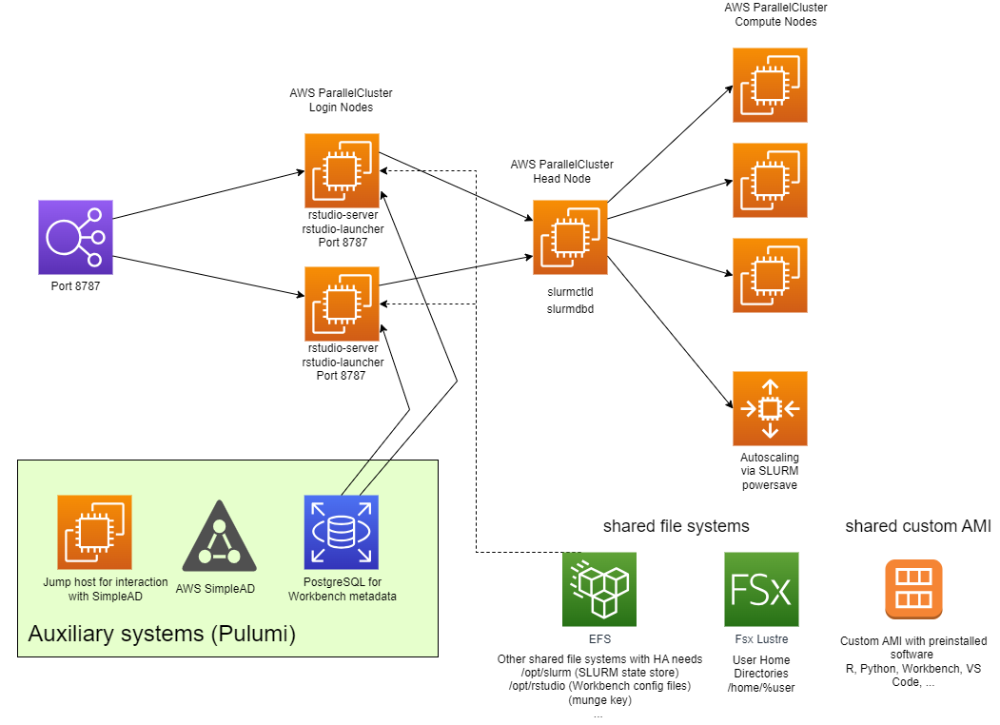

Next Generation Workbench integration into AWS ParallelCluster
1 Introduction
AWS ParallelCluster is a framework that allows for easy setup of HPC clusters with various schedulers. It takes a YAML file with all the necessary definitions and transforms that into Cloud Formation Code that then gets deployed into AWS.
At the moment it supports both SLURM and AWS Batch.
Posit Workbench supports SLURM as a HPC back end via the SLURM Launcher. As a consequence, a github repository has been set up to highlight a possible way to integrate Posit Workbench with AWS ParallelCluster via the SLURM Launcher. The approach used there works but has several shortcomings:
Setting Workbench on the head node where also the
slurmctldandslurmdbd(SLURM Controller and Database) daemons are running makes this head node very vulnerable and a single point of failure.All traffic will be routed through the head node
The head node does not only act as Workbench Server and runs the main SLURM daemons (see above), it is also used as a NFS server adding additional load (depending on the size and utilisation of the cluster) that could contribute to very bad user experience on the HPC cluster up to a crash of the same if resources are exhausted.
This document serves two purposes: Documenting the current setup used for Workbench benchmarking but also summarizing a potential reference architecture that overcomes some of the shortcomings of the current Workbench integration into AWS ParallelCluster with a focus on High(er) Availabiity.
2 A new approach
Fortunately, AWS ParallelCluster keeps evolving and in parallel Posit’s understanding of the tool also increases.
Recent releases have added a couple of very interesting, exciting and very helpful features, most notably
the ability to add login nodes in version 3.7.0
ability to use EFS instead of NFS to host shared file systems needed for the cluster (e.g.
/opt/slurmcontaining the SLURM installation) that removes the need to host an NFS server on the head node. This feature will be part of version 3.8.0 (beta version out - release imminent)ability to set up
/homeon FsX for Lustre or EFS instead of internal NFS hosted on the head node This feature is part of version 3.8.0 as well.
While the above features are very vital to the new approach for the Workbench integration discussed in this doc, there is many other functionalities that are almost taken for granted (e.g. Easy integration into auth subsystems, SLURM scheduling fine tuning capabilities, …).
If there was one feature that should be explicitly mentioned here, then it needs to be the ability to build custom AMIs. One of the features of a scalable cloud deployment (like AWS ParallelCluster) is the ability to scale up and down based on user demand. If there is a scale-up event, i.e. a node is getting added to the cluster, a new EC2 instance is provisioned. The elapsed time for such a scale-up event is about 4 minutes today when using a pre-built AMI but will increase if there is a need to run additional software installations just because the AMI does not contain all the needed features. Building a custom AMI will help to keep the instance spin up time at the 4 minute mark.
3 Setup Instructions
In order to setup the new integration, 3 steps are needed
Set up auxiliary services (Active Directory, PostgreSQL DB, users) - cf. Section 3.1
Create a custom AMI (Section 3.2)
Trigger AWS ParallelCluster build (Section 3.3)
All those three steps are explained in the subsequent sections.
3.1 Auxiliary services
When using Posit Workbench for High Availability, the use of a PostgreSQL db is mandatory. Given the distributed nature of a HPC cluster, some kind of directory service for user management is needed. The directory service of choice here is AWS SimpleAD. In order to efficiently and reliably work with this directory service, an additional EC2 instance is spun up that is used to add new users to the directory. This so-called jump host is fully integrated into SimpleAD and runs a tool called adcli (Active Directory CLI tool) that facilitates the management of users in SimpleAD. Via the use of additional expect scripts, this tool is used to programmatically create users. All of those tools and services are orchestrated via Pulumi recipes
3.1.1 Prerequisites
You will need to have
pulumi installed and configure so you can successfully create, run and modify pulumi stacks
just installed locally
ssh client including the
ssh-keygenutility
3.1.2 How to setup
In the github repo, go tho the pulumi sub-folder. There, run the following commands
# Let's add a new ssh key pair
just key-pair-new
# Create a new stack
pulumi stack init auxiliary-wb
# Configure eMail address to ensure resources are properly tagged
pulumi config set email my-email@corp.co
# add EC2 keypair via AWS CLI
aws ec2 import-key-pair --key-name `pulumi config get email`-keypair-for-pulumi --public-key-material `cat key.pem.pub| base64 `
# Finally start deployment of SimpleAD, PostgreSQL DB and Jump Host
# Also create 500 users at the same time
just upPlease be aware
Naming of your stack (
auxiliary-wb) can be changed to your preferenceMake sure to set your correct eMail address.
If you would like to use a different number of users, instead of
just uprunpulumi up -yand thenjust create-users Xwhere X is the number of users you want to create.You can change the default values for various parameters defined in
Pulumi.yamlto your liking as well. Please do NOT changeDomain- this is currently hard-coded into the AWS ParallelCluster setup. Anything else can be changed as you see fit.
Current configurable parameters in the pulumi recipe
| Parameter | Description | Default value |
|---|---|---|
region |
AWS region | eu-west-1 |
email |
eMail address of user | tbd@tbc.com |
ServerInstanceType |
Instance Type for the AD jumphost | t3.medium |
ami |
A valid AMI used to deploy on AD jumphost (must be Ubuntu 20.04 LTS) | ami-0d2a4a5d69e46ea0b |
Domain |
Name of Domain to be used for AD | pwb.posit.co |
DomainPW |
Password for the Administrator AD account | Testme123! |
db_username |
User name for PostgreSQL DB | pwb_db_admin |
db_password |
Password for PostgreSQL DB | pwb_db_password |
Once you successfully built everything, pulumi stack output` should report something like
Current stack outputs (12):
OUTPUT VALUE
DomainPWARN arn:aws:secretsmanager:eu-west-1:637485797898:secret:SimpleADPassword-2898387-BQn4mT
ad_access_url d-93675e652d.awsapps.com
ad_dns_1 172.31.33.122
ad_dns_2 172.31.48.170
ad_jump_host_public_dns ec2-52-16-178-244.eu-west-1.compute.amazonaws.com
ad_jump_host_public_ip 52.16.178.244
db_address rsw-dbfee1a4f.clovh3dmuvji.eu-west-1.rds.amazonaws.com
db_endpoint rsw-dbfee1a4f.clovh3dmuvji.eu-west-1.rds.amazonaws.com:5432
db_port 5432
jump_host_dns ec2-52-16-178-244.eu-west-1.compute.amazonaws.com
key_pair id michael.mayer@posit.co-keypair-for-pulumi-1699956356
vpc_subnet subnet-03259a81db5aec4493.1.3 Additional details
Users are created in the following way by default: User Name is positXXXX where XXXX is a 4-digit zero-padded number. Password is Testme1234. Those defaults can be changed in server-side-files/config/useradd.sh . The referenced script is using multi-threaded bash to speed up user creation. In order to prevent user creation from failing due to too many concurrent connections, it additionally runs pamtester to ensure the user is correctly created.
3.2 Custom AMI
3.3 AWS ParallelCluster
3.3.1 Introduction
With launching the cluster via AWS ParallelCluster, everything comes together.
3.3.2 Python Virtual Env
The virtual environment for AWS Parallelcluster can be created from the base folder of the git repo via
python -m venv .aws-pc-venv
source .aws-pc-venv/bin/activate
pip install -r requirements.txt
deactivateYou may want to add the patch described in Section 4.1 to ensure full functionality of workbench.
3.3.3 Prerequisites
Python Virtual Environment set up and activated (cf. Section 3.3.2).
Auxiliary Services up and running (cf. Section 3.1)
Custom AMI built (cf. Section 3.2)
S3 bucket set up for temporarily hosting cluster deployment files and scripts
3.3.4 Deployment instructions
Review the cluster template in
config/cluster-config-wb.tmpland modify accordingly.Review the
deploy.shscript and modify accordingly, especiallyCLUSTERNAME- a human readable name of your clusterS3_BUCKETNAME- The name of the S3 bucket you set up in Section 3.3.3SECURITYGROUP_RSW- a security group that should allow at least external access to port 443 and 8787 (the latter if no SSL is being used).AMI- the AMI created in ?@sec-how-to-build-a-custom-amiSINGULARITY_SUPPORT- if set true, Workbench will be configured for Singularity integration and twor-session-completecontainers (Ubuntu Jammy and Cent OS 7 based) will be built. Please note that this significantly extends the spin-up time of the cluster.
3.3.5 Default values for Cluster deployment
For the deploy.sh script, unless mentioned in step 2 of the deployment instructions (cf. Section 3.3.4), all relevant parameters are extracted from the pulumi deployment for the auxiliary services.
The default value in the cluster template config/cluster-config-wb.tmpl` are as follows
EFS storage used for shared file systems needed by AWS ParallelCluster
One Head Node
Instance
t3.xlarge100 GB of local EBS storage
Script
install-pwb-config.shtriggered when head node is being deployed.
Compute Nodes with
Script
config-compute.shtriggered when compute node starts.Partition
allInstance
t3.xlargeminimum/maximum number of instances: 1/10
Partition
gpuInstance p3.2xlarge
minimum/maximum number of instances; 0/1
2 Login Nodes with
- Instance
t3.xlarge - ELB in front
- Instance
Shared storage for
/home- FsX for Lustre with capacity of 1.2 TB and deployment typeSCRATCH_2
All of the above settings (Instance type, numbers, FsX size) can be changed as needed.
3.3.6 Notes on install-pwb-config.sh and install-compute.sh
install-pwb-config.sh mainly creates Posit Workbench configuration files and configures the workbench systemctl services rstudio-launcher and rstudio-server . It is only executed on the designated head node
Workbench uses
/opt/parallelcluster/shared/rstudio/as the base for its configuration (PWB_BASE_DIR)./opt/parallelcluster/shared` is already created by AWS ParallelCluster and shared across all nodes (head, login and compute) so we are making use of this functionality.configuration files are deployed in
$PWB_BASE_DIR/etc/rstudioshared storage is configured in
$PWB_BASE_DIR/sharedR Versions file is configured in
$PWB_BASE_DIR/shared/r-versionsIn order to distinguish the head node from the login node, an empty file
/etc/head-nodeis created. This is used in the cron job mentioned in Section 3.2 to help differentiate the login nodes from the head node.
ìnstall-compute.sh script detects the presence of a GPU and then automatically updates the NVIDIA/CUDA driver and installs the CuDNN library for distributed GPU computing. This is more a nice to have but is rsther useful for distributed tensorflow etc…

3.3.7 Customisations on top of AWS ParallelCluster
3.3.7.1 Elastic Load Balancer
AWS ParallelCluster is setting up an ELB for the Login nodes and ensures that the desired number of login nodes is available at any given time. The ELB is by default listening on port 22 (ssh). In order to change that one would need to patch the python scripts a bit (patch supplied in Section 4.1)
This change is simple but will effectively disable the ability to ssh into the ELB. Typically however Workbench Users do not need ssh access to login nodes - if needed, they can open a termina within the RStudio IDE, for example.
An alternative would be to add a second ELB for Workbench but this would imply a significantly larger patch to AWS ParallelCluster.
3.3.7.2 The “thing” with the Login Nodes
AWS ParallelCluster introduced the ability to define separate login nodes in Version 3.7.0. This is great and replaces a rather complicated workaround that was in place until then. Unfortunately the team did not add the same features to the new Login Nodes such as OnNodeConfigured . We have raise a github issue which was acknowledged and the missing feature will be implemented in an upcoming release.
As a consequence we have implemented a workaround with a cron job that runs on all ParallelCluster managed nodes (Login, Head and Compute) every minute. A login node is detected if there is a NFS mount that contains the name login_node and if there is no file /etc/head-node (the latter would signal that this is a head node indeed). See Section 3.3.6 for additional information.
Until the github issue is fixed, we will have to live with this workaround.
3.4 Summary and Conclusions
This document describes a possibility on how to integrate Workbench and AWS ParallelCluster that allows for partial High Availability. The setup can tolerate login node failures and recover and as a consequence the workbench part is HA.
The main ingredients for this setup is the creation of a custom AMI with all the software needed (Workbench, R, Python, …) baked into a custom AMI that can be used for all the three node types (Login, Head and Compute Node).
In order to achieve this, some additional logic has to be implemented and some workarounds for missing features in AWS ParallelCluster be used.
The remaining issue is however the single head node which is a single point of failure (if the head node crashes, SLURM stops working).
3.4.1 How to reach “full” HA
AWS paralelcluster makes a clear distinction between Head and Login nodes. This is more than justified given the fact that the Head node not only runs slurmctld but also can act as a NFS server exporting file systems such as /home , /opt/slurm, … This makes the Head node a single point of failure from the perspective of the NFS server alone.
With the release of AWS ParallelCluster 3.8.0 (currently available as beta version), all the NFS file systems can be hosted on external EFS. This removes the single point of failure for the NFS server. There is a bug in the beta version where all but one file system can be hosted on EFS but this will be fixed in the official release of 3.8.0.
Once this is in place, the boundaries between the Login Nodes and Head Nodes will become much less clear. With adding additional logic, one can automatically start additional slurmctld processes on the login nodes and configure those hosts in the slurm configuration. If the head node then fails, a slurmctld of one of the compute nodes will take over. While adding additional slurmctld is fairly straightforward, there also is a need for regular checks if all the defined slurmctld` hosts are still up and running. If not, those need to be removed from the slurm config.
The complexity of establishing the above is fairly small but then it is another customisation we have to make and maintain. As long as this is only a posit internal solution, we should be ok.
A drawback of having full HA as mentioned above however is that very likely the ParallelCluster API may become unuseable in case the head node is no longer available. Things like updating configuration and settings of the running cluster may no longer work. Whether this is needed in a productive cluster is another matter of debate.
4 Appendix
4.1 Patch for ELB to listen on port 8787 instead of 22
diff -u --recursive pcluster/templates/cluster_stack.py pcluster.new/templates/cluster_stack.py
--- pcluster/templates/cluster_stack.py 2023-11-22 12:25:53
+++ pcluster.new/templates/cluster_stack.py 2023-11-22 15:11:48
@@ -871,10 +871,10 @@
def _get_source_ingress_rule(self, setting):
if setting.startswith("pl"):
return ec2.CfnSecurityGroup.IngressProperty(
- ip_protocol="tcp", from_port=22, to_port=22, source_prefix_list_id=setting
+ ip_protocol="tcp", from_port=8787, to_port=8787, source_prefix_list_id=setting
)
else:
- return ec2.CfnSecurityGroup.IngressProperty(ip_protocol="tcp", from_port=22, to_port=22, cidr_ip=setting)
+ return ec2.CfnSecurityGroup.IngressProperty(ip_protocol="tcp", from_port=8787, to_port=8787, cidr_ip=setting)
def _add_login_nodes_security_group(self):
login_nodes_security_group_ingress = [
diff -u --recursive pcluster/templates/login_nodes_stack.py pcluster.new/templates/login_nodes_stack.py
--- pcluster/templates/login_nodes_stack.py 2023-11-22 12:25:53
+++ pcluster.new/templates/login_nodes_stack.py 2023-11-22 15:11:19
@@ -273,10 +273,10 @@
self,
f"{self._pool.name}TargetGroup",
health_check=elbv2.HealthCheck(
- port="22",
+ port="8787",
protocol=elbv2.Protocol.TCP,
),
- port=22,
+ port=8787,
protocol=elbv2.Protocol.TCP,
target_type=elbv2.TargetType.INSTANCE,
vpc=self._vpc,
@@ -299,7 +299,7 @@
),
)
- listener = login_nodes_load_balancer.add_listener(f"LoginNodesListener{self._pool.name}", port=22)
+ listener = login_nodes_load_balancer.add_listener(f"LoginNodesListener{self._pool.name}", port=8787)
listener.add_target_groups(f"LoginNodesListenerTargets{self._pool.name}", target_group)
return login_nodes_load_balancer